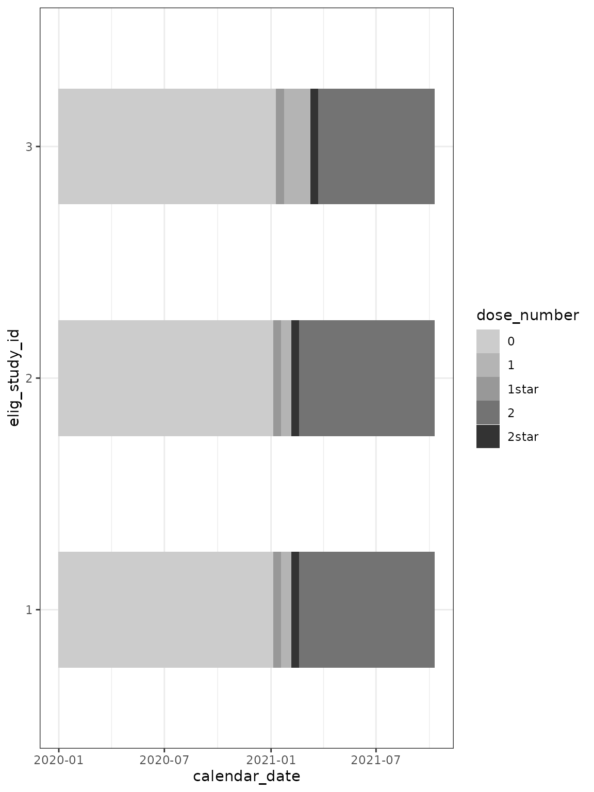
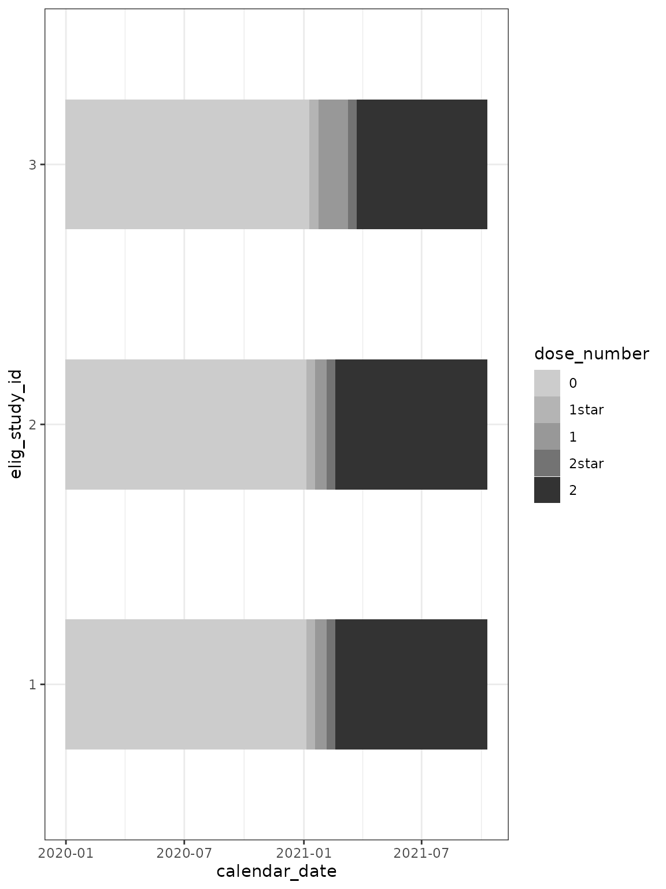

Annotate vaccines
annotate_vaccines.RmdIntroduction
The chronogram package provides a family of functions to annotate a
chronogram. These all start cg_annotate_. This vignette
explains how to use these annotation functions. Before using this
vignette, consult the vignette("assembly").
Setup
library(chronogram)
library(dplyr)
#>
#> Attaching package: 'dplyr'
#> The following objects are masked from 'package:stats':
#>
#> filter, lag
#> The following objects are masked from 'package:base':
#>
#> intersect, setdiff, setequal, union
library(ggplot2)
library(patchwork)We will use the example pre-built chronogram, introduced in the
vignette("assembly"), and add on some example infection
data.
data(built_smallstudy)
cg <- built_smallstudy$chronogram
infections_to_add <- built_smallstudy$infections_to_add
## add to chronogram
cg <- cg_add_experiment(
cg,
infections_to_add
)Vaccine annotation
Annotation is required to allow the selection sub-cohorts of individuals (and corresponding dates) that are relevant to test your biological hypothesis.
For vaccines, use cg_annotate_vaccines_count()
– adds a column which counts the number of vaccines each participant has received over time.
– includes a “star” system, to allow the first few days after a vaccine to be easily identified. For example, 24hrs after the first dose of a vaccine (“1star”) is probably not biologically reflect of that dose’s effect. The user can set the value of days to “star” to suit their analysis.
cg_annotate_vaccines_count() requires that metadata
columns follow this pattern:
dose_1, dose_2, dose_3, …, dose_i
date_dose_1, date_dose_2, date_dose_3, …, date_dose_i
The trailing digit reflects the dose number for both
dose_i and date_dose_i.
The {dose} and {date_dose} prefixes should be provided to the
function, as shown in the chunk below. You might envisage a study with
{sarscov2_dose}, {sarscov2_date_dose}, {influenza_dose} &
{influenza_date_dose} for which two runs of
cg_annotate_vaccines_count() would be needed.
Worked example
cg <- cg_annotate_vaccines_count(
cg,
## the prefix to the dose columns: ##
dose = dose,
## the output column name: ##
dose_counter = dose_number,
## the prefix to the date columns: ##
vaccine_date_stem = date_dose,
## use 14d to 'star' after a dose ##
intermediate_days = 14
)
#> Using stem: date_dose
#> Found vaccine dates
#> date_dose_1
#>
#> date_dose_2
## plot over time ##
cg %>%
ggplot(
aes(
x = calendar_date,
y = elig_study_id,
fill = dose_number
)
) +
geom_tile(height = 0.5) +
scale_fill_grey(end = 0.2, start = 0.8) +
theme_bw()
In the above plot, the character vector dose_number is
coerced to a factor. The resulting levels of the factor are
counter-intuitive. To improve the plot, you can manually specify the
factor:
cg %>%
mutate(dose_number = factor(dose_number,
levels = c(
"0",
"1star",
"1",
"2star",
"2"
)
)) %>%
ggplot(
aes(
x = calendar_date,
y = elig_study_id,
fill = dose_number
)
) +
geom_tile(height = 0.5) +
scale_fill_grey(end = 0.2, start = 0.8) +
theme_bw()
The dose_number column is intentionally returned to
cg as character vector rather than converting to a factor.
There is the possibility for mishandling if a factor:
as.numeric(dose_number) == 1, refers to the situation
dose == 0, and as.numeric(dose_number) == 2,
refers to the situation dose == 1.
Summary
This vignette has provided examples of the cg_annotate family in
action. If you are conducting a multi-pathogen study (RSV, flu, covid),
then run a set of cg_annotate family functions for each
pathogen - and you may wish to prefix the output columns eg
RSV_, flu_ & covid_.
SessionInfo
sessionInfo()
#> R version 4.4.1 (2024-06-14)
#> Platform: x86_64-pc-linux-gnu
#> Running under: Ubuntu 22.04.4 LTS
#>
#> Matrix products: default
#> BLAS: /usr/lib/x86_64-linux-gnu/openblas-pthread/libblas.so.3
#> LAPACK: /usr/lib/x86_64-linux-gnu/openblas-pthread/libopenblasp-r0.3.20.so; LAPACK version 3.10.0
#>
#> locale:
#> [1] LC_CTYPE=C.UTF-8 LC_NUMERIC=C LC_TIME=C.UTF-8
#> [4] LC_COLLATE=C.UTF-8 LC_MONETARY=C.UTF-8 LC_MESSAGES=C.UTF-8
#> [7] LC_PAPER=C.UTF-8 LC_NAME=C LC_ADDRESS=C
#> [10] LC_TELEPHONE=C LC_MEASUREMENT=C.UTF-8 LC_IDENTIFICATION=C
#>
#> time zone: UTC
#> tzcode source: system (glibc)
#>
#> attached base packages:
#> [1] stats graphics grDevices utils datasets methods base
#>
#> other attached packages:
#> [1] patchwork_1.2.0 ggplot2_3.5.1 dplyr_1.1.4 chronogram_1.0.0
#>
#> loaded via a namespace (and not attached):
#> [1] gtable_0.3.5 jsonlite_1.8.8 highr_0.11 compiler_4.4.1
#> [5] tidyselect_1.2.1 stringr_1.5.1 tidyr_1.3.1 jquerylib_0.1.4
#> [9] systemfonts_1.1.0 scales_1.3.0 textshaping_0.4.0 yaml_2.3.10
#> [13] fastmap_1.2.0 R6_2.5.1 generics_0.1.3 knitr_1.48
#> [17] tibble_3.2.1 desc_1.4.3 munsell_0.5.1 lubridate_1.9.3
#> [21] bslib_0.8.0 pillar_1.9.0 rlang_1.1.4 utf8_1.2.4
#> [25] stringi_1.8.4 cachem_1.1.0 xfun_0.46 fs_1.6.4
#> [29] sass_0.4.9 timechange_0.3.0 cli_3.6.3 pkgdown_2.1.0
#> [33] withr_3.0.1 magrittr_2.0.3 digest_0.6.36 grid_4.4.1
#> [37] lifecycle_1.0.4 vctrs_0.6.5 evaluate_0.24.0 glue_1.7.0
#> [41] farver_2.1.2 ragg_1.3.2 fansi_1.0.6 colorspace_2.1-1
#> [45] purrr_1.0.2 rmarkdown_2.27 tools_4.4.1 pkgconfig_2.0.3
#> [49] htmltools_0.5.8.1